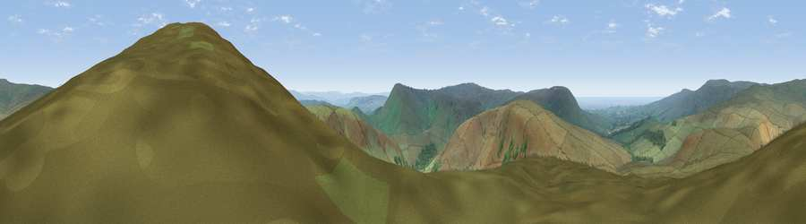

Viewpoint near Dunsop Bridge
#5853 in England · top 13% of its area beats it · near Dunsop Bridge · open accessWhere it is
The exact computed spot (SD 63238 53275). Click the marker for map links.
Public access: this spot lies on mapped open-access land (CRoW Act 2000) — you may roam here on foot. Computed from Natural England's CRoW access layer and OpenStreetMap rights of way — not the legal definitive map. Always verify locally.
The view, rendered

A 360° render of this exact spot computed from the terrain model, tree cover and land cover — summer colours, afternoon light, calibrated against photographs of famous viewpoints. Real trees, hedges and buildings will differ in detail.
The panorama
Grey silhouette: terrain skyline in each direction (720 bearings, Earth curvature and refraction included). Dashed green: skyline with trees (+15 m) and buildings (+8 m) as obstacles. Blue strip: how far the ground is visible on each bearing.
Where the view opens
Wedge length = distance to the farthest visible ground on that bearing (vegetation-aware). Rings at 10, 25 and 50 km.
What fills the view
93% grassland · 6% woodland ·
Angular shares of the visible panorama (visual magnitude), not map area. Landscape diversity 0.13 (0–1 Shannon).
Key numbers
More beautiful places nearby
The staircase of upgrades: each row has a higher view potential than everything closer. Driving times are estimates from straight-line distance, calibrated against real road routing — check an actual route before setting out.
| Place | Direction | Drive | Score |
|---|---|---|---|
| Whins Brow | E · 0 km | ~1 min | 76.3 |
| Viewpoint c9170_7172 | NW · 7 km | ~15 min | 77.0 |
| Paddy's Pole | SSW · 8 km | ~16 min | 77.3 |
| Parlick | SSW · 9 km | ~18 min | 77.5 |
| Viewpoint near Quernmore | NW · 11 km | ~21 min | 78.0 |
| Viewpoint near Scorton | WSW · 12 km | ~23 min | 79.9 |
| Warton Crag | NW · 24 km | ~39 min | 83.2 |
| Viewpoint near Grange-over-Sands | NW · 34 km | ~53 min | 83.4 |
53.97422, -2.56196 · source: screening · position refined by local search. Computed location — check access rights before visiting.